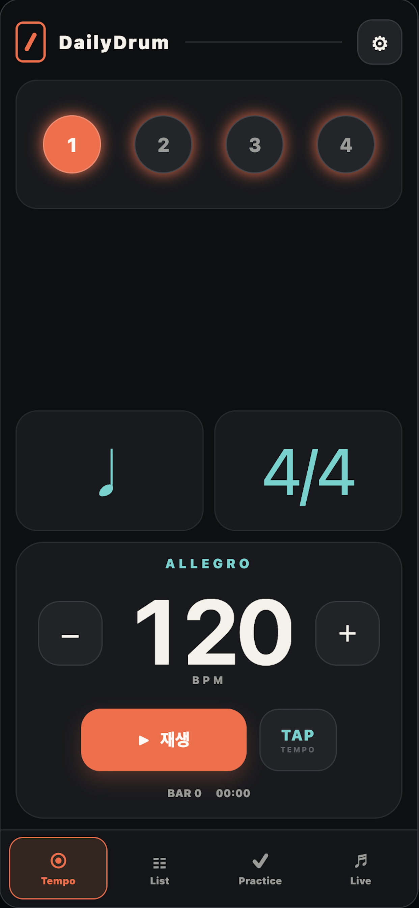

01
Tempo
나의 박자를 찾는 시간
템포, 박자표, 음표 분할과 강세를 내 연주에 맞게. TAP TEMPO로 머릿속 리듬을 바로 옮겨보세요.
10–800 BPM · 6가지 음표 분할
YOUR RHYTHM. EVERY DAY.
나만의 템포로 쌓아가는, 더 단단한 연주.
연습과 라이브를 위한 메트로놈, DailyDrum.
iPhone · iPad · Android

FOUR MODES. ONE FLOW.
박자를 맞추고, 곡을 정리하고,
반복해서 연습하고, 무대에 오르기까지.
나의 박자를 찾는 시간
템포, 박자표, 음표 분할과 강세를 내 연주에 맞게. TAP TEMPO로 머릿속 리듬을 바로 옮겨보세요.
10–800 BPM · 6가지 음표 분할
다음 곡까지 준비된 연주
곡마다 다른 설정은 이름과 함께 저장하세요. 연주목록을 폴더로 정리하고, 길게 눌러 순서를 바꿀 수 있습니다.
곡별 설정 저장 · 폴더 관리
조금씩, 더 단단한 연습
오토메이터로 목표 템포까지 단계적으로 연습하세요. 한 마디 예비박으로 준비하고, 트래커로 다음 곡을 이어갑니다.
자동 템포 변화 · 한 마디 예비박
무대에서는 연주에만 집중
곡의 BPM, 음표 분할, 박자표를 한눈에. 곡을 앞뒤로 넘기고, 템포 앵커로 첫 박을 다시 맞추세요.
연주목록 확인 · 템포 앵커
SMALL STEPS. SOLID GROOVE.
오늘은 느린 템포부터. 익숙해지면 조금 더 빠르게.
템포를 바꾸느라 연습의 흐름을 놓치지 마세요.
다양한 클릭 사운드와 영어 보이스 카운트.
볼륨, 피치, 음 길이를 내 취향에 맞추세요.
별도 계정 없이 시작하세요.
저장한 연주목록과 설정은 기기에 보관됩니다.
휴대폰과 태블릿에서 이어지는 연습.
iPhone·iPad 가로 화면도 지원합니다.
YOUR NEXT SESSION STARTS HERE.
매일 매일 즐거운 드럼 라이프, 데일리 드럼.